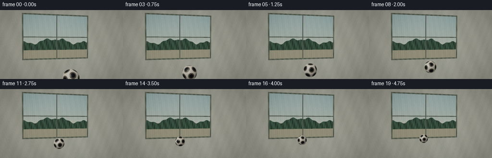
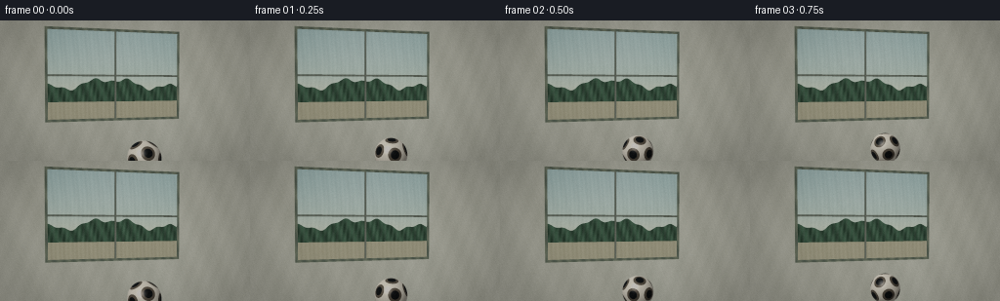
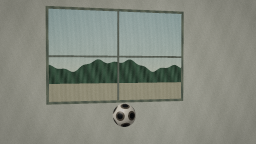
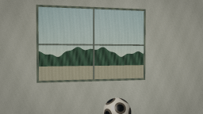
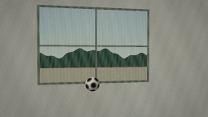

CODING AGENTS AS PIXEL WORLD MODELS
traex/DeepSeek-V4.1-Flash · phygen_062
点击播放 · 原生 RGB 像素
逐轮保存的候选
回放视频、检查图与代码变化。
每份候选均可单独播放。实际图片检查记录在下方工具轨迹中。
候选 01播放与检查图
点击播放 · 原生 RGB 像素


展开代码变化
--- 上一保存版本
+++ 本次保存版本
@@ -0,0 +1,383 @@
+from pathlib import Path
+
+import numpy as np
+from PIL import Image
+
+import artifact_io
+
+
+WIDTH = 256
+HEIGHT = 144
+FRAMES = 20
+FPS = 4.0
+SUPERSAMPLE = 4
+
+CASE_DIR = Path(__file__).resolve().parent
+
+
+def normalize(vector, axis=-1):
+ return vector / np.maximum(np.linalg.norm(vector, axis=axis, keepdims=True), 1e-9)
+
+
+def smoothstep(edge0, edge1, value):
+ x = np.clip((value - edge0) / (edge1 - edge0), 0.0, 1.0)
+ return x * x * (3.0 - 2.0 * x)
+
+
+def rotate_x(vector, angle):
+ c, s = np.cos(angle), np.sin(angle)
+ out = vector.copy()
+ out[..., 1] = c * vector[..., 1] - s * vector[..., 2]
+ out[..., 2] = s * vector[..., 1] + c * vector[..., 2]
+ return out
+
+
+def sphere_hit(origin, directions, center, radius):
+ offset = origin - center
+ b = np.sum(directions * offset, axis=-1)
+ c = np.sum(offset * offset, axis=-1) - radius * radius
+ discriminant = b * b - c
+ valid = discriminant > 0.0
+ distance = -b - np.sqrt(np.maximum(discriminant, 0.0))
+ valid &= distance > 1e-4
+ return distance, valid
+
+
+CAMERA = np.array([-1.30, 1.35, -3.80], dtype=np.float64)
+CAMERA_TARGET = np.array([0.30, 1.15, 4.40], dtype=np.float64)
+FORWARD = normalize(CAMERA_TARGET - CAMERA)
+RIGHT = normalize(np.cross(np.array([0.0, 1.0, 0.0]), FORWARD))
+UP = normalize(np.cross(FORWARD, RIGHT))
+FOV = np.deg2rad(52.0)
+FOCAL = (WIDTH * 0.5) / np.tan(FOV * 0.5)
+
+WINDOW_Z = 4.5
+WINDOW_X = 2.22
+WINDOW_Y0 = 0.16
+WINDOW_Y1 = 3.16
+FRAME_WIDTH = 0.085
+WALL_Z = WINDOW_Z
+BALL_RADIUS = 0.255
+KEY_LIGHT = normalize(np.array([-0.58, 0.78, -0.58]))
+
+
+def icosahedron_vertices():
+ phi = (1.0 + np.sqrt(5.0)) * 0.5
+ vertices = []
+ for a in (-1.0, 1.0):
+ for b in (-phi, phi):
+ vertices.extend([(0.0, a, b), (a, b, 0.0), (b, 0.0, a)])
+ return normalize(np.asarray(vertices, dtype=np.float64))
+
+
+PENTAGON_CENTERS = icosahedron_vertices()
+PENTAGON_COS = np.cos(0.345)
+PENTAGON_EDGE = 0.026
+
+
+def football_color(normal, view_direction, rotation, reflection=False):
+ local = rotate_x(normal, -rotation)
+ center_dot = np.max(local @ PENTAGON_CENTERS.T, axis=-1)
+ pentagon = center_dot > PENTAGON_COS
+ seam = np.abs(center_dot - PENTAGON_COS) < PENTAGON_EDGE
+
+ diffuse = np.clip(normal @ KEY_LIGHT, 0.0, 1.0)
+ view = -view_direction
+ half_vector = normalize(KEY_LIGHT + view)
+ specular = np.clip(np.einsum("...i,...i->...", normal, half_vector), 0.0, 1.0) ** 42.0
+ rim = np.clip(1.0 - np.einsum("...i,...i->...", normal, view), 0.0, 1.0) ** 2.5
+
+ white = np.stack(
+ [
+ np.full_like(diffuse, 0.88),
+ np.full_like(diffuse, 0.86),
+ np.full_like(diffuse, 0.79),
+ ],
+ axis=-1,
+ )
+ black = np.stack(
+ [
+ np.full_like(diffuse, 0.027),
+ np.full_like(diffuse, 0.034),
+ np.full_like(diffuse, 0.039),
+ ],
+ axis=-1,
+ )
+ color = np.where(pentagon[..., None], black, white)
+ seam_color = np.array([0.22, 0.20, 0.17])
+ color = np.where(seam[..., None], seam_color, color)
+
+ illumination = 0.37 + 0.73 * diffuse[..., None]
+ color *= illumination
+ color += 0.34 * specular[..., None]
+ color += 0.075 * rim[..., None] * np.array([0.85, 0.91, 1.0])
+ if reflection:
+ color *= np.array([0.88, 0.94, 0.98])
+ color += np.array([0.018, 0.023, 0.026])
+ return np.clip(color, 0.0, 1.5)
+
+
+def outdoor_color(point, direction):
+ travel = (16.0 - point[..., 2]) / np.maximum(direction[..., 2], 1e-5)
+ q = point + direction * travel[..., None]
+ qx, qy = q[..., 0], q[..., 1]
+
+ horizon = np.exp(-np.maximum(qy, 0.0) * 0.35)
+ sky_top = np.array([0.47, 0.67, 0.72])
+ sky_horizon = np.array([0.84, 0.87, 0.75])
+ color = sky_top + (sky_horizon - sky_top) * horizon[..., None]
+
+ tree_line = (
+ 1.42
+ + 0.33 * np.sin(0.82 * qx + 0.4)
+ + 0.18 * np.sin(2.1 * qx + 1.7)
+ + 0.09 * np.sin(5.2 * qx)
+ )
+ tree = (qy > 0.02) & (qy < tree_line)
+ leaves = 0.55 + 0.12 * np.sin(7.0 * qx + 3.0 * qy) + 0.07 * np.sin(15.0 * qx - 4.0 * qy)
+ tree_color = np.stack([0.20 * leaves, 0.34 * leaves, 0.25 * leaves], axis=-1)
+ color = np.where(tree[..., None], tree_color, color)
+
+ ground = qy <= 0.02
+ ground_color = np.stack(
+ [
+ np.full_like(qx, 0.55),
+ np.full_like(qx, 0.54),
+ np.full_like(qx, 0.43),
+ ],
+ axis=-1,
+ )
+ color = np.where(ground[..., None], ground_color, color)
+
+ soft_cloud = smoothstep(2.1, 3.3, qy) * (0.5 + 0.5 * np.sin(0.42 * qx + 0.7))
+ color = color * (1.0 - 0.10 * soft_cloud[..., None]) + 0.10 * soft_cloud[..., None]
+ return np.clip(color, 0.0, 1.0)
+
+
+def floor_color(point, ball_x, ball_z):
+ x, z = point[..., 0], point[..., 2]
+ board_width = 0.27
+ board_coord = (x + 40.0) / board_width
+ board_id = np.floor(board_coord)
+ board_fraction = board_coord - board_id
+ variation = 0.5 + 0.5 * np.sin(board_id * 2.173 + 0.8)
+ grain = (
+ 0.025 * np.sin(34.0 * x + 3.1 * z)
+ + 0.016 * np.sin(83.0 * x - 8.0 * z)
+ + 0.010 * np.sin(17.0 * z + 11.0 * x)
+ )
+ seam_distance = np.minimum(board_fraction, 1.0 - board_fraction) * board_width
+ seam = 1.0 - smoothstep(0.004, 0.018, seam_distance)
+ cross_coord = (z + 20.0) / 2.4
+ cross_fraction = cross_coord - np.floor(cross_coord)
+ cross_distance = np.minimum(cross_fraction, 1.0 - cross_fraction) * 2.4
+ cross_seam = 1.0 - smoothstep(0.005, 0.018, cross_distance)
+
+ base = np.stack(
+ [
+ 0.36 + 0.045 * variation + grain,
+ 0.235 + 0.030 * variation + grain * 0.7,
+ 0.135 + 0.018 * variation + grain * 0.4,
+ ],
+ axis=-1,
+ )
+ base *= (1.0 - 0.24 * seam - 0.08 * cross_seam)[..., None]
+
+ shadow_dx = (x - ball_x - 0.13) / 0.40
+ shadow_dz = (z - ball_z - 0.19) / 0.54
+ cast_shadow = np.exp(-(shadow_dx * shadow_dx + shadow_dz * shadow_dz) * 1.7)
+ contact = np.exp(
+ -((x - ball_x) / 0.31) ** 2 - ((z - ball_z) / 0.40) ** 2
+ )
+ base *= (1.0 - 0.46 * cast_shadow - 0.28 * contact)[..., None]
+
+ window_glow = np.exp(-(x / 2.15) ** 2) * smoothstep(0.8, 4.4, z)
+ base += 0.045 * window_glow[..., None] * np.array([0.75, 0.86, 0.88])
+
+ view_to_floor = z - CAMERA[2]
+ distance_fade = 0.83 + 0.17 * np.exp(-np.maximum(view_to_floor, 0.0) / 8.0)
+ base *= distance_fade[..., None]
+ return np.clip(base, 0.0, 1.0)
+
+
+def wall_color(point):
+ x, y = point[..., 0], point[..., 1]
+ plaster = (
+ 0.018 * np.sin(4.8 * x + 2.2 * y)
+ + 0.012 * np.sin(13.0 * x - 5.0 * y)
+ + 0.006 * np.sin(39.0 * x + 17.0 * y)
+ )
+ color = np.stack(
+ [
+ np.full_like(x, 0.58) + plaster,
+ np.full_like(x, 0.60) + plaster,
+ np.full_like(x, 0.55) + plaster,
+ ],
+ axis=-1,
+ )
+ light_band = np.exp(-((x - 1.6) / 1.1) ** 2) * 0.055
+ color += light_band[..., None] * np.array([0.65, 0.74, 0.75])
+ return np.clip(color, 0.0, 1.0)
+
+
+def frame_color(point, distance_to_edge):
+ x, y = point[..., 0], point[..., 1]
+ ridge = 0.04 * np.sin(21.0 * x + 7.0 * y)
+ color = np.stack(
+ [
+ np.full_like(x, 0.25) + ridge,
+ np.full_like(x, 0.29) + ridge,
+ np.full_like(x, 0.245) + ridge * 0.7,
+ ],
+ axis=-1,
+ )
+ highlight = 1.0 - smoothstep(0.0, 0.018, distance_to_edge)
+ color += highlight[..., None] * np.array([0.09, 0.10, 0.075])
+ color *= 0.92 + 0.08 * smoothstep(0.0, 0.08, distance_to_edge)[..., None]
+ return np.clip(color, 0.0, 1.0)
+
+
+def render_frame(frame_index):
+ height = HEIGHT * SUPERSAMPLE
+ width = WIDTH * SUPERSAMPLE
+ yy, xx = np.mgrid[0:height, 0:width].astype(np.float64)
+ pixel_x = (xx + 0.5) / SUPERSAMPLE
+ pixel_y = (yy + 0.5) / SUPERSAMPLE
+ directions = (
+ FORWARD[None, None, :]
+ + ((pixel_x - WIDTH * 0.5) / FOCAL)[..., None] * RIGHT[None, None, :]
+ - ((pixel_y - HEIGHT * 0.5) / FOCAL)[..., None] * UP[None, None, :]
+ )
+ directions = normalize(directions)
+
+ time = frame_index / (FRAMES - 1)
+ ball_z = -0.16 + 3.86 * time
+ ball_x = -0.30 + 0.045 * time
+ ball_center = np.array([ball_x, BALL_RADIUS + 0.003, ball_z])
+ rotation = (ball_z + 0.16) / BALL_RADIUS
+
+ t_ball, hit_ball = sphere_hit(CAMERA, directions, ball_center, BALL_RADIUS)
+ t_floor = np.full_like(pixel_x, np.inf)
+ floor_ray = directions[..., 1] < -1e-6
+ t_floor[floor_ray] = -CAMERA[1] / directions[..., 1][floor_ray]
+ t_floor[t_floor <= 0.0] = np.inf
+
+ t_plane = np.full_like(pixel_x, np.inf)
+ plane_ray = directions[..., 2] > 1e-6
+ t_plane[plane_ray] = (WALL_Z - CAMERA[2]) / directions[..., 2][plane_ray]
+ t_plane[t_plane <= 0.0] = np.inf
+
+ best = np.minimum(np.minimum(t_floor, t_plane), np.where(hit_ball, t_ball, np.inf))
+ is_ball = hit_ball & (t_ball <= best + 1e-6)
+ is_floor = np.isfinite(t_floor) & (t_floor <= best + 1e-6) & ~is_ball
+ is_plane = np.isfinite(t_plane) & (t_plane <= best + 1e-6) & ~is_ball
+
+ image = np.zeros_like(directions)
+ image[:] = np.array([0.44, 0.54, 0.56])
+
+ safe_floor_distance = np.where(is_floor, t_floor, 0.0)
+ p_floor = CAMERA + directions * safe_floor_distance[..., None]
+ image = np.where(is_floor[..., None], floor_color(p_floor, ball_x, ball_z), image)
+
+ p_plane = CAMERA + directions * t_plane[..., None]
+ px, py = p_plane[..., 0], p_plane[..., 1]
+ inside_window = (
+ (np.abs(px) < WINDOW_X)
+ & (py > WINDOW_Y0)
+ & (py < WINDOW_Y1)
+ )
+ edge_distance = np.minimum(
+ np.minimum(WINDOW_X - np.abs(px), py - WINDOW_Y0),
+ WINDOW_Y1 - py,
+ )
+ frame_mask = inside_window & (edge_distance < FRAME_WIDTH)
+ wall_mask = ~inside_window
+ glass_mask = inside_window & ~frame_mask
+
+ image = np.where(wall_mask[..., None], wall_color(p_plane), image)
+ image = np.where(frame_mask[..., None], frame_color(p_plane, edge_distance), image)
+
+ reflected_direction = directions.copy()
+ reflected_direction[..., 2] *= -1.0
+ mirrored_center = np.array([ball_x, BALL_RADIUS + 0.003, 2.0 * WINDOW_Z - ball_z])
+ t_reflection, hit_reflection = sphere_hit(
+ p_plane + reflected_direction * 1e-4,
+ reflected_direction,
+ mirrored_center,
+ BALL_RADIUS,
+ )
+
+ glass = outdoor_color(p_plane, directions)
+ incidence = np.clip(-np.einsum("...i,i->...", directions, np.array([0.0, 0.0, -1.0])), 0.0, 1.0)
+ fresnel = 0.055 + 0.34 * (1.0 - incidence) ** 3.0
+ reflected_room = np.stack(
+ [
+ np.full_like(px, 0.34),
+ np.full_like(px, 0.40),
+ np.full_like(px, 0.40),
+ ],
+ axis=-1,
+ )
+ glass = glass * (1.0 - fresnel[..., None]) + reflected_room * fresnel[..., None]
+
+ reflected_point = (
+ p_plane + reflected_direction * np.where(hit_reflection, t_reflection, 0.0)[..., None]
+ )
+ reflected_normal = normalize(reflected_point - mirrored_center)
+ reflected_normal[..., 2] *= -1.0
+ reflection_color = football_color(
+ reflected_normal,
+ reflected_direction,
+ rotation,
+ reflection=True,
+ )
+ reflection_alpha = np.where(hit_reflection, 0.82, 0.0)
+ glass = glass * (1.0 - reflection_alpha[..., None]) + reflection_color * reflection_alpha[..., None]
+
+ vertical_mullion = np.abs(px) < 0.032
+ horizontal_mullion = np.abs(py - 1.64) < 0.030
+ mullion = (vertical_mullion | horizontal_mullion) & glass_mask
+ mullion_highlight = (
+ (np.abs(px) < 0.009) | (np.abs(py - 1.64) < 0.008)
+ ) & mullion
+ glass = np.where(
+ mullion[..., None],
+ np.array([0.22, 0.25, 0.22]) + mullion_highlight[..., None] * 0.08,
+ glass,
+ )
+
+ pane_variation = 1.0 + 0.018 * np.sin(17.0 * px + 3.0 * py)
+ rain_streak = 0.018 * np.sin(48.0 * px + 1.8 * np.sin(2.4 * py))
+ glass = np.clip(glass * pane_variation[..., None] + rain_streak[..., None], 0.0, 1.0)
+ image = np.where(glass_mask[..., None], glass, image)
+
+ ball_point = CAMERA + directions * t_ball[..., None]
+ ball_normal = normalize(ball_point - ball_center)
+ ball = football_color(ball_normal, directions, rotation)
+ image = np.where(is_ball[..., None], ball, image)
+
+ image = image.reshape(HEIGHT, SUPERSAMPLE, WIDTH, SUPERSAMPLE, 3).mean(axis=(1, 3))
+ image = np.clip(image, 0.0, 1.0)
+ image = image / (image + np.array([0.78, 0.78, 0.78])) * 1.34
+
+ yy_small, xx_small = np.mgrid[0:HEIGHT, 0:WIDTH].astype(np.float64)
+ nx = (xx_small - WIDTH * 0.5) / (WIDTH * 0.5)
+ ny = (yy_small - HEIGHT * 0.5) / (HEIGHT * 0.5)
+ vignette = 1.0 - 0.15 * np.clip((nx * nx * 0.72 + ny * ny * 0.55) ** 1.35, 0.0, 1.0)
+ image *= vignette[..., None]
+ image = image * np.array([1.015, 1.0, 0.975]) + np.array([0.006, 0.004, 0.002])
+
+ rng = np.random.default_rng(1009 + frame_index)
+ grain = rng.normal(0.0, 0.0055, size=(HEIGHT, WIDTH, 1))
+ image = np.clip(image + grain, 0.0, 1.0)
+ return (image * 255.0 + 0.5).astype(np.uint8)
+
+
+def main():
+ frames = np.stack([render_frame(index) for index in range(FRAMES)])
+ artifact_io.save(frames, CASE_DIR)
+ print(f"Saved {frames.shape[0]} frames at {frames.shape[2]}x{frames.shape[1]} to {CASE_DIR}")
+
+
+if __name__ == "__main__":
+ main()
可观测工具轨迹
实际执行的命令与返回图片。
命令 1exit 0
/bin/bash -c 'cat prompt.txt'
命令 2exit 0
/bin/bash -c 'cat GENERATION_RULES.md'
命令 3exit 0
/bin/bash -c 'cat task_spec.json'
命令 4exit 0
/bin/bash -c "find . -maxdepth 2 -type f -printf '%p\\n' | sort"
命令 5exit 0
/bin/bash -c "sed -n '1,240p' artifact_io.py"
命令 6exit 0
/bin/bash -c "python - <<'PY'
import numpy as np
C=np.array([-3.6,1.35,-2.2]); target=np.array([0.4,0.85,2.2])
f=(target-C); f/=np.linalg.norm(f)
right=np.cross([0,1,0],f); right/=np.linalg.norm(right)
up=np.cross(f,right); up/=np.linalg.norm(up)
print('f',f,'right',right,'up',up)
W,H=256,144; fov=np.deg2rad(48); fy=(H/2)/np.tan(fov/2); fx=fy
print(fy)
for z in [0.4,1.2,2,2.8,3.6,4.55]:
P=np.array([0.0,.22,z]); v=P-C; xcam=np.dot(v,right); ycam=np.dot(v,up); zcam=np.dot(v,f)
u=W/2 + fx*xcam/zcam; vv=H/2 - fy*ycam/zcam
r=.22*fy/zcam
print(z,zcam,u,vv,r)
# window corners
for x,y in [(-2.2,0),(2.2,0),(-2.2,3.2),(2.2,3.2)]:
P=np.array([x,y,5]);v=P-C;xcam=np.dot(v,right);ycam=np.dot(v,up);zcam=np.dot(v,f);u=W/2+fx*xcam/zcam;vv=H/2-fy*ycam/zcam
print('corner',x,y,u,vv,zcam)
PY"命令 7exit 0
/bin/bash -c "python - <<'PY'
import numpy as np
W,H=256,144
for C,target in [([-2.5,1.25,-2.8],[.8,.9,3.0]),([-3.2,1.4,-2.2],[.5,.9,2.6]),([-2.8,1.3,-3.0],[.6,.9,3.0]),([-4,1.5,-2.2],[.6,.9,3.0])]:
C=np.array(C,float);f=np.array(target)-C;f/=np.linalg.norm(f);right=np.cross([0,1,0],f);right/=np.linalg.norm(right);up=np.cross(f,right);up/=np.linalg.norm(up);fy=72/np.tan(np.deg2rad(24))
def p(P):v=np.array(P)-C;return W/2+fy*np.dot(v,right)/np.dot(v,f),H/2-fy*np.dot(v,up)/np.dot(v,f)
print('\\nC',C,'f',f)
print('window', [p([x,y,5]) for x,y in [(-2.5,0),(1.8,0),(-2.5,3.2),(1.8,3.2)]])
for z in [.4,1.2,2,2.8,3.6,4.3]: print(z, p([0,.22,z]), p([0,.22,10-z]))
PY"命令 8exit 0
/bin/bash -c "python - <<'PY'
import numpy as np
W,H=256,144
for C,target,fov in [([-1.4,1.35,-3.2],[.25,1.0,4.5],50),([-1.2,1.25,-3.5],[.3,.9,4.5],48),([-1.8,1.4,-3.4],[.3,1.0,4.5],50)]:
C=np.array(C,float);f=np.array(target)-C;f/=np.linalg.norm(f);right=np.cross([0,1,0],f);right/=np.linalg.norm(right);up=np.cross(f,right);up/=np.linalg.norm(up);fx=(W/2)/np.tan(np.deg2rad(fov/2))
def p(P):v=np.array(P)-C;z=np.dot(v,f);return W/2+fx*np.dot(v,right)/z,H/2-fx*np.dot(v,up)/z,z
print('\\nC',C,'f',f)
print('window', [p([x,y,4.5]) for x,y in [(-2.2,.2),(2.2,.2),(-2.2,3.2),(2.2,3.2)]])
for z in [-.8,0,1,2,3,3.7]: print(z, 'ball',tuple(round(a,1) for a in p([-.25,.42,z])), 'ref',tuple(round(a,1) for a in p([-.25,.42,9-z])))
PY"命令 9exit 0
/bin/bash -c "python - <<'PY'
try:
import scipy; print('scipy',scipy.__version__)
except Exception as e: print('no scipy',e)
PY"命令 10exit 0
/bin/bash -c "python - <<'PY'
import numpy as np
W,H=256,144
for C,target,fov in [([-1.1,1.22,-4.0],[.3,1.05,4.4],52),([-1.25,1.3,-4.2],[.3,1.1,4.4],50),([-1.3,1.35,-3.8],[.3,1.15,4.4],52)]:
C=np.array(C,float);f=np.array(target)-C;f/=np.linalg.norm(f);right=np.cross([0,1,0],f);right/=np.linalg.norm(right);up=np.cross(f,right);up/=np.linalg.norm(up);fx=(W/2)/np.tan(np.deg2rad(fov/2))
def p(P):v=np.array(P)-C;z=np.dot(v,f);return W/2+fx*np.dot(v,right)/z,H/2-fx*np.dot(v,up)/z,z
print('\\nC',C,'f',f)
print('window', [tuple(round(a,1) for a in p([x,y,4.5])) for x,y in [(-2.2,.25),(2.2,.25),(-2.2,3.2),(2.2,3.2)]])
print('floor front', [tuple(round(a,1) for a in p([x,0,z])) for x,z in [(-4,-1.5),(4,-1.5),(-4,4.4),(4,4.4)]])
for z in [0,1,2,3,3.7]: print(z, 'ball',tuple(round(a,1) for a in p([-.25,.42,z])), 'ref',tuple(round(a,1) for a in p([-.25,.42,9-z])))
PY"命令 11exit 0
/bin/bash -c "python - <<'PY'
import numpy as np
W,H=256,144
C=np.array([-1.3,1.35,-3.8]);target=np.array([0.3,1.15,4.4]);fov=52
f=target-C;f/=np.linalg.norm(f);right=np.cross([0,1,0],f);right/=np.linalg.norm(right);up=np.cross(f,right);up/=np.linalg.norm(up);fx=(W/2)/np.tan(np.deg2rad(fov/2))
def p(P):v=np.array(P)-C;z=np.dot(v,f);return W/2+fx*np.dot(v,right)/z,H/2-fx*np.dot(v,up)/z,z
for z in [-.25,0,.5,1,2,3,3.75]:
u,v,d=p([-.25,.24,z]); u2,v2,d2=p([-.25,.24,9-z]);
print(z,'main',u,v,'r',.24*fx/d,'ref',u2,v2,'r',.24*fx/d2)
print('floor corners', [p([x,0,z]) for x,z in [(-5,-2),(5,-2),(-5,4.5),(5,4.5)]])
print('window', [p([x,y,4.5]) for x,y in [(-2.25,.18),(2.25,.18),(-2.25,3.15),(2.25,3.15)]])
PY"命令 12exit 1
/bin/bash -c 'python generate.py'
命令 13exit 0
/bin/bash -c 'python generate.py'
命令 14exit 0
/bin/bash -c "python - <<'PY'
import numpy as np
from PIL import Image
from pathlib import Path
files=sorted(Path('frames').glob('*.png'))
imgs=[np.asarray(Image.open(p)).astype(np.float32) for p in files]
print('count',len(imgs),'shape',imgs[0].shape,'dtype',imgs[0].dtype)
print('global min/max',min(x.min() for x in imgs),max(x.max() for x in imgs))
diffs=[np.mean(np.abs(imgs[i]-imgs[i-1])) for i in range(1,len(imgs))]
print('mean abs frame delta',round(float(np.mean(diffs)),3),'range',round(min(diffs),3),round(max(diffs),3))
print('nonblank std first/last',round(float(imgs[0].std()),2),round(float(imgs[-1].std()),2))
print('artifacts',[(p.name,p.stat().st_size) for p in [Path('pixels.npz'),Path('index.html'),Path('inspection.png'),Path('transition_check.png')]])
PY"命令 15exit 0
/bin/bash -c 'python -m py_compile generate.py && git status --short'
视觉工具实际返回图片 1

视觉工具实际返回图片 2

视觉工具实际返回图片 3

视觉工具实际返回图片 4

保存候选 1 份；完成命令 15 次；可验证图片返回 4 张。原始 API 响应与完整日志保留在本地。